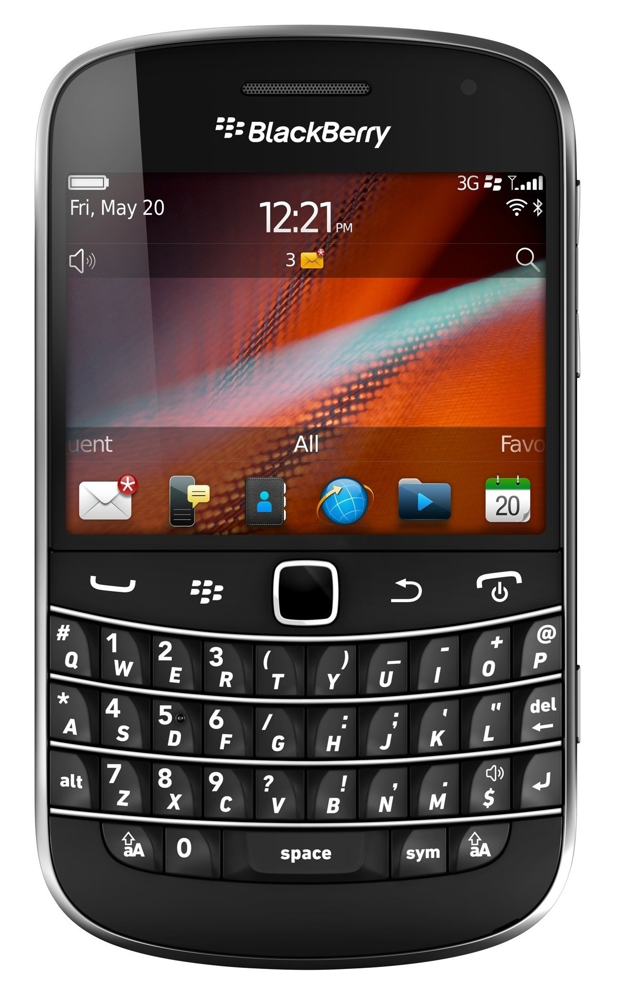

Imagen del Dispositivo

Descripción
Un teléfono con teclado es un dispositivo móvil que incorpora un teclado físico para facilitar la entrada de texto y comandos. En el contexto de la nube, estos dispositivos permiten a los usuarios acceder a servicios en línea, enviar mensajes, realizar llamadas y gestionar datos de manera eficiente. En el contexto de la nube, actúa como un terminal cliente potente que permite a los usuarios acceder a aplicaciones web, procesar datos y conectarse a servidores remotos para realizar tareas complejas, como el desarrollo de software y la gestión de sistemas cliente-servidor.